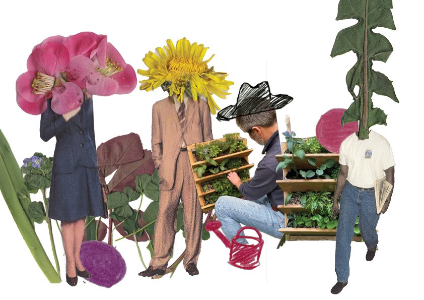

Installation + 1ère visite
Un potager installé chez vous, prêt à être cultivé immédiatement
Nous installons votre potager en fonction de votre espace et de vos envies. Ce service comprend l’installation du mobilier, la mise en culture et une première visite de suivi pour vous accompagner dans les débuts.
Ce service est conçu pour intégrer le potager à votre balcon, terrasse ou jardin et les plantations sont choisies selon vos préférences. L’installation est suivie d’une première visite, au bout de quelques semaines, par une équipe Povers. Nous vous aidons à prendre en main votre potager (ajustement des plantations, conseils d’arrosage, premières récoltes). L’objectif est de vous donner toutes les clés pour entretenir votre espace de culture.
Je suis intéressée